TNGA machining area · Prototype walkthrough · October 2026
Prepared by Ideal Technology Solutions
What the app does
Coolant Data Capture replaces the paper and spreadsheet coolant round. Fluid techs record refractometer readings, bug slides, washer titrations, mix-tank batches and housekeeping checks on a tablet at the machine. The app calculates concentration and dosing on the spot, flags anything out of range, and builds the weekly reports managers send to the plant.
Who uses it
Role
Can do
Internal Tech
Enter, edit and delete readings for their own shift. Other shift's rows and the Leadec log are read only.
External Tech (Leadec)
Enter readings and the cleaning log. Edit only their own entries for 5 days. Cannot delete.
Manager
Everything above, plus Reports, Master Data, deleting any entry and sending the Weekly Status.
A typical shift
Open Daily Round. Only the systems due today for your shift are listed.
Enter the Brix reading. Concentration and the dosing amount appear instantly.
Add product, enter what was added and the final RI. Out-of-range rows need a comment before they save.
On Monday dip bug slides and on Wednesday read them in Bug & pH. Titrate washers once a week.
Managers check the Dashboard during the day and send the Weekly Status on Friday.
Header, roles and offline mode
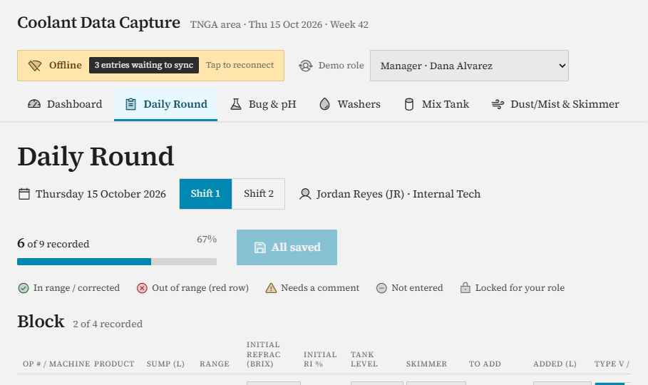
Offline: entries queue on the tablet and the badge counts what is waiting to sync.
The header shows area, date and ISO week number, plus connection status.
When the tablet loses Wi-Fi the app keeps working. Saved entries queue up and sync automatically when it reconnects.
The navigation bar changes with role. Reports and Master Data appear for managers only.
Daily Round
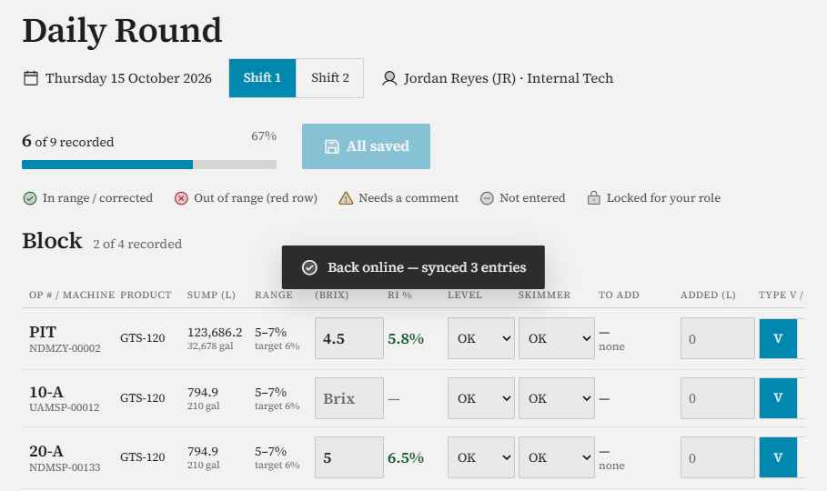
Systems due today, grouped by line, with progress for the shift.
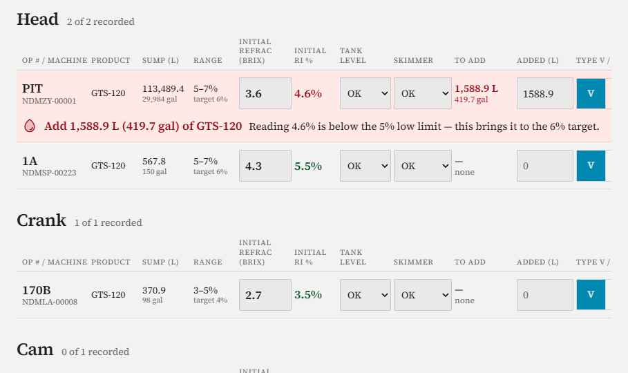
A low reading turns the row red and tells the tech exactly how much product to add.
Concentration % = Brix × the product's refractive factor (for example GTS-120 × 1.29).
To add (L) = (target % − reading %) ÷ 100 × sump litres, shown in litres and gallons. Example: Block OP 10-A at 3.5 Brix → 4.5% → add 11.9 L (3.1 gal).
Final RI estimates itself from what was added and can be overwritten with the re-test.
A row still out of range after dosing cannot save without a comment, picked from the standard list or typed.
Pit rows offer water additions (+1,000 to +15,000 L), and the date is stamped automatically.
Every saved row shows who entered it and when. Locked rows show a padlock with the reason.
Entry and audit history
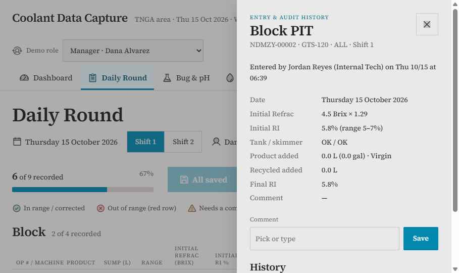
Tapping the time stamp opens the entry, its calculation and every change made to it.
Each edit records who changed what, from and to. Deleting is limited to managers and techs on the entry's own shift, and always asks for confirmation.
Dashboard
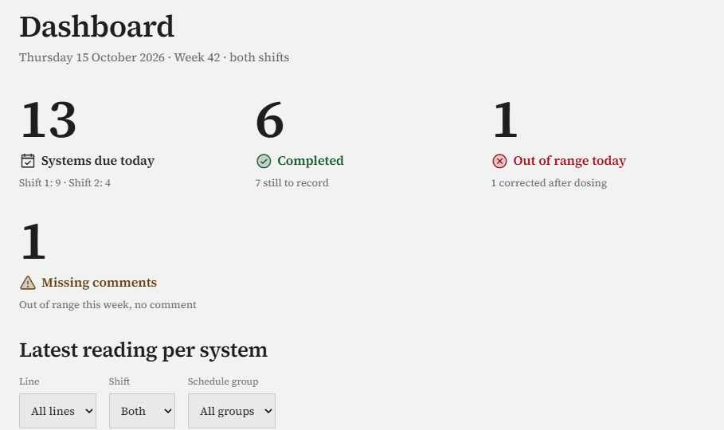
Four tiles: due today, completed, out of range, and missing comments.
Latest reading per system, filterable by line, shift and schedule group.
Today's warnings list missing readings and out-of-range entries without comments, each with a button that jumps straight to the fix.
Bug & pH
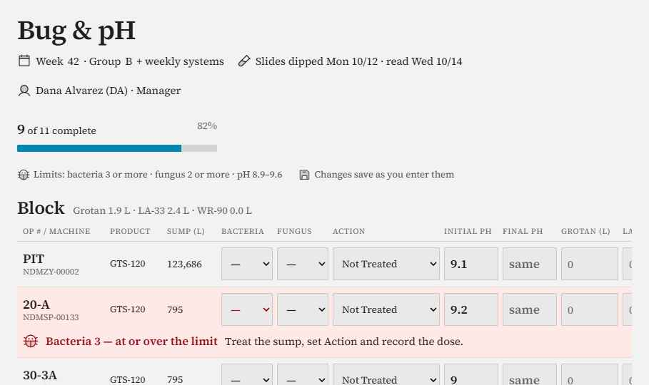
This week's test group (A or B by week parity) plus the weekly systems.
Bacteria and fungus readings (0–4), action taken, initial and final pH, and doses of Grotan, LA-33 and WR-90.
Flags fire at bacteria 3 or more, fungus 2 or more, or pH outside 8.9–9.6, with a short instruction.
Chemical totals are shown per line and for the whole area. Results feed the Weekly Status automatically.
Washers
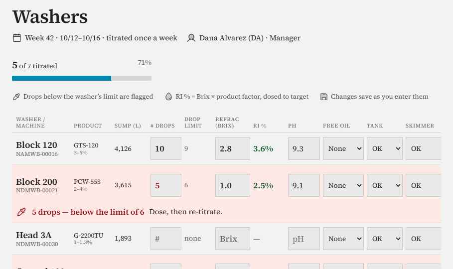
Weekly titration for every washer, including Assembly and the Regrind parts washer.
Number of drops against each washer's drop limit, Brix → RI %, pH, free oil, tank level, skimmer and WR-90 added.
Dosing prompts work the same way as the round. Heavy oil with a broken skimmer prompts a work order.
Mix Tank
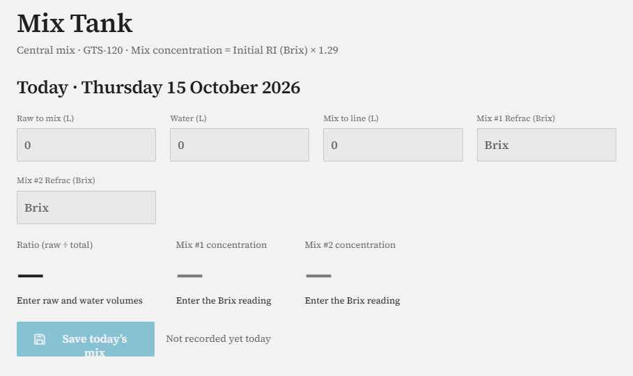
Today's batch with live calculations, and the week's log below.
Raw to mix, water and mix to line in litres. Mix #1 and #2 concentration = Brix × 1.29.
The expected % from the raw-to-water ratio is shown beside each reading. Readings more than 0.5 points off turn amber.
Dust/Mist & Skimmer Checks
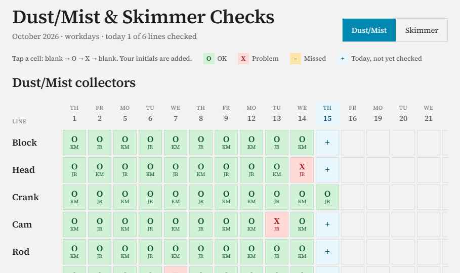
A monthly grid of workdays by line. One tap per check.
Tap a cell to cycle O (OK), X (problem) and blank. The tech's initials are added. Missed past days show amber, and problem and missed counts total on the right.
Leadec Cleaning Log
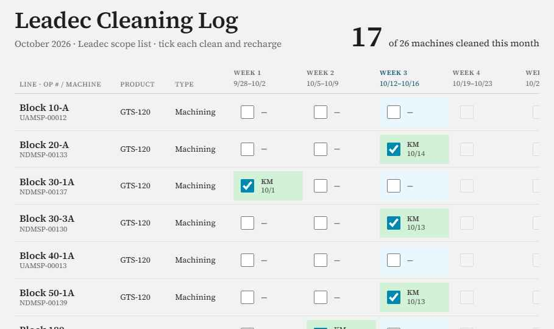
Machines in Leadec's scope with a box for each week of the month.
Ticking a week records the clean and recharge with initials and date. Future weeks are locked. Cleanings also show as markers on the trend charts.
Reports (manager)
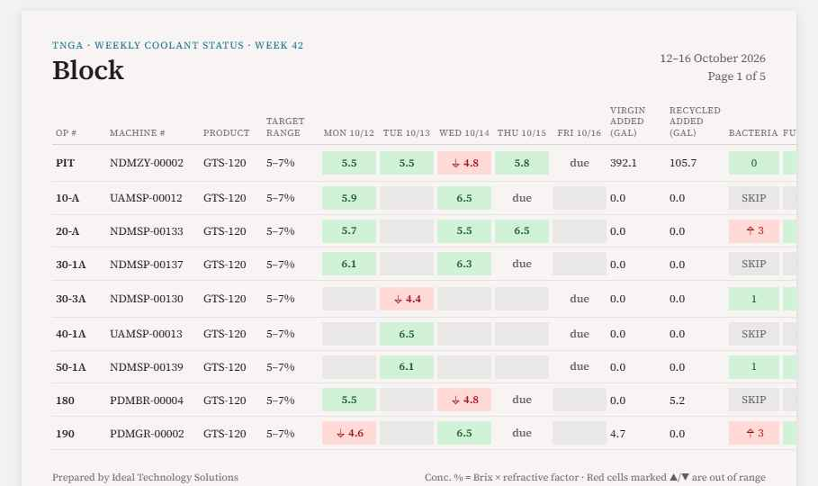
Weekly Status: one page per line, with green and red cells by range and the bug and pH columns.
A review checklist above the report lists missing readings, out-of-range entries without comments, unread slides and missing pH before anything is sent.
Send opens the distribution-list picker. Nothing goes out until the manager confirms, and the send is logged.
Only days actually worked appear. A Monday holiday moves the MWTH round to Tuesday.
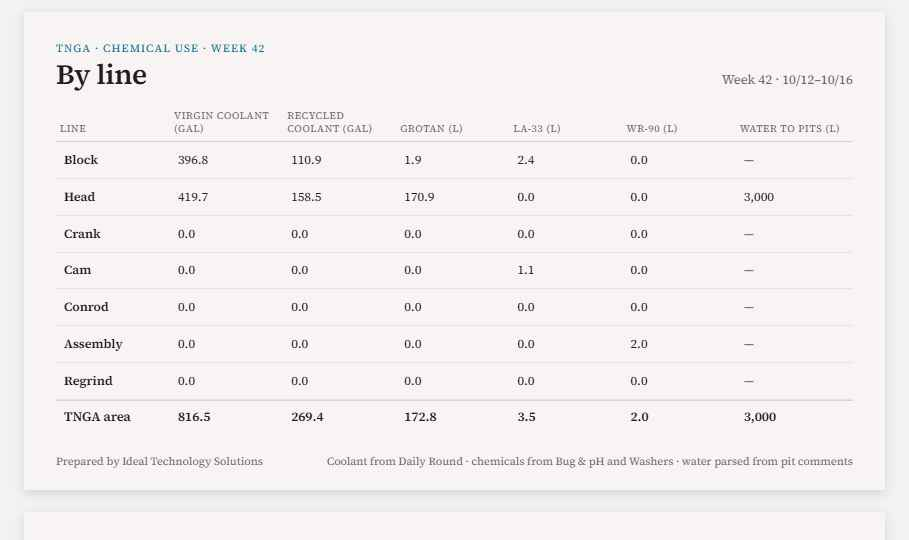
Chemical Use: coolant, Grotan, LA-33, WR-90 and pit water by line, with area totals and a mix-tank summary.
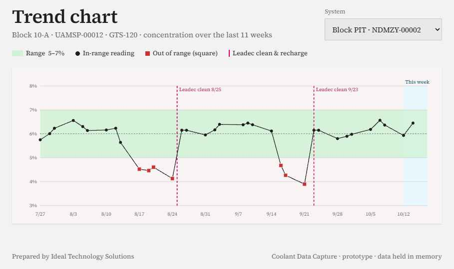
Trend Charts: 11 weeks of concentration against the target band, with Leadec cleans marked.
Also included: Washer Report, Regrind Parts Washer, Assembly Washer, Bug and pH, Leadec Weekly and Dust/Mist. Each has PDF and Excel export.
Master Data (manager)
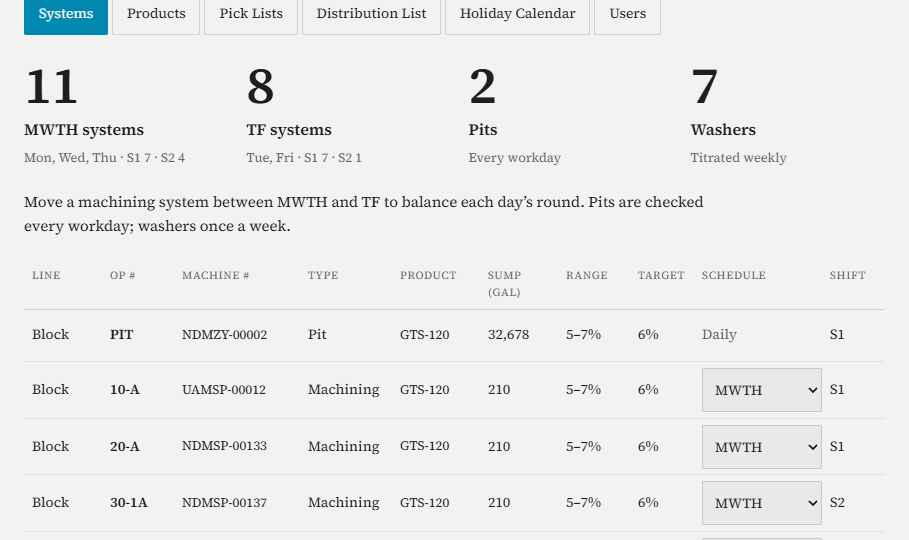
Systems tab: the workload split between MWTH and TF, with every system's settings.
Systems: move a machining system between MWTH and TF to balance the round. The change applies immediately.
Products: refractive factors. Pick Lists: add or remove standard comments.
Distribution List, Holiday Calendar (add or remove future holidays) and Users with their permissions.
Schedule rules
Pits: every workday. MWTH: Monday, Wednesday and Thursday. TF: Tuesday and Friday. Washers: weekly.
Bug testing alternates Group A and Group B by week. Weekly systems are tested every week.
No readings are due on holidays.
What's left before production
The prototype shows every screen and rule working on realistic sample data. To become the live app it still needs:
Database and sign-in. Data is held in memory today and resets on reload. Roles are switched from a demo menu, not a real login.
Real exports and email. PDF, Excel and Send show confirmations only. Report files and sending to the distribution lists need building.
True offline sync. Offline is simulated with a toggle. Production needs storage on the device and conflict handling when two techs edit the same row.
Confirmed plant data. The system list, refractive factors, drop limits, Leadec scope and distribution lists are sample values to be replaced with the plant's own.
Rules to confirm. Treating fewer drops than the limit as low, the 0.5-point mix-tank tolerance, and the chemical dose units (litres) are assumptions.
Consistent saving. The Daily Round and Mix Tank use a Save button, while the other capture screens save as you type. Pick one pattern.
Editing Master Data. Systems can be moved between MWTH and TF, but adding, retiring or re-ranging systems, and editing products, users and lists beyond comments, isn't built yet.